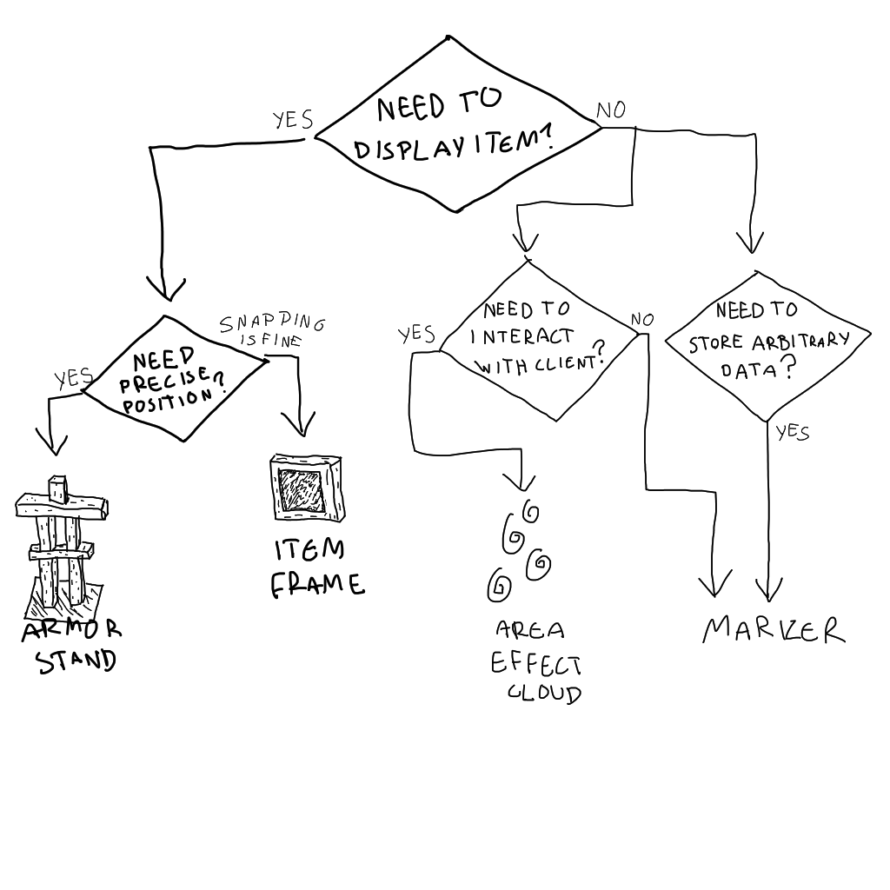

Knowledge Portal
TODO: make website
Good Datapack Practices and Common Tricks
Written by Ellivers
Structuring and Consistency
An organized structure to your data pack's folders and file names always helps you understand your code better and leads to less bugs. Place files that have something in common in the same folder, and name them based on what their purpose is.
Consistency in naming stuff like tags, files, and scores can help keep you sane. Always have a clear structure in place, such as prefixing tag and objective names with your namespace (namespace.name) and giving tags different categories (namespace.entity.name, namespace.block.name).
If you are unsure of how a good structure could look, you could take a look at some vanilla assets, such as the lang file or the built-in data pack, as well as get ideas from looking at data packs that other people have made.
Commenting
Comments are very important and a huge help when working with functions, as well as any code in general. Ideally, every function should have at least one line of comments in it. A comment is any line that starts with a #.
Here is how I like to structure my comments:
# Called by namespace:path/to/function
# Short description of what this function does
# More describing if needed
# Description of what these commands do
command 1
command 2
# Description of what these commands do
command 3
command 4
Performance
Functions in data packs can easily lead to bad performance. Here is a list of some things to be aware of:
-
Multiple Entity Selectors
@e is an essential selector as it is able to select all entities, but it is also a huge reason for command lag. Therefore, it should be avoided in large quantities as much as possible. If you execute a function as an entity, you can then use the
@sselector to refer to that entity.@sis the selector you should be using the most.Example of splitting an
@eselector into multiple@s:function1:
# Executes as all pigs that have the "namespace.mytag" tag execute as @e[type=minecraft:pig,tag=namespace.mytag] run function namespace:function2function2:
# Called by namespace:function1 # Runs commands as all pigs that have the "namespace.mytag" tag say My name is @s kill @s say ouch@a is another selector that selects multiple entities. It only selects players, and there are usually not nearly as many players as general entities in a world, so it does not contribute to lag as much as
@e. However, if you have a lot of@aselectors you should still be splitting them into@s, the same way you do with@e. -
NBT Checks
Checking for NBT data hurts performance quite a lot, and is something that you should avoid as much as possible.
Example of a bad NBT check:
# Check if the executing player is holding a feather execute if entity @s[nbt={SelectedItem:{id:"minecraft:feather"}}]Predicates
Predicates are JSON files that can be used in combination with commands to check for all kinds of things.
Often, NBT checks can be replaced with predicates to improve performance. This is the case for the command shown above.
Here is what a predicate replacing the NBT check above would look like:
{ "condition": "minecraft:entity_properties", "entity": "this", "predicate": { "equipment": { "mainhand": { "item": "minecraft:feather" } } } }It could replace the check in the command like this:
# Check if the executing player is holding a feather execute if predicate namespace:path/to/predicateHowever, predicates will not help if you only use them to check using the
nbtkey. This is an example of something that does not help performance:{ "condition": "minecraft:entity_properties", "entity": "this", "predicate": { "nbt": "{OnGround:1b}" } }Notice how the predicate above only checks for the property
OnGround:1b, and does not use any keys other thannbt. In this case, it is better to simply check the NBT in the command directly:# Check if the executing entity is on the ground execute if entity @s[nbt={OnGround:1b}]Storage
Storage is global NBT that can contain anything you want and that can be accessed from anywhere. It is the most performance-friendly option for storing NBT, but is not specific to any entity or block.
If you need to either modify NBT several times, or check it multiple times while predicates are not applicable, using storage can be a lot more efficient.
Here is an example:
# Set the X, Y, and Z coordinates of the executing entity's position data modify storage namespace:name Key set from entity @s Pos data modify storage namespace:name Key[0] set value 3.0d data modify storage namespace:name Key[1] set value 7.0d data modify storage namespace:name Key[2] set value 85.0d data modify entity @s Pos set from storage namespace:name Key
Advancements
When you need to detect something a player does, like placing a block, first see if that is something an advancement can detect, instead of creating a scoreboard objective for it or perhaps running a check for it every tick. Advancements are very useful and powerful, as they do not cause any lag (with the exception of the tick advancement trigger) and can be used to run a function when something happens.
Fakeplayers
"Fakeplayers" are an extremely useful trick used in order to avoid creating big amounts of scoreboard objectives. Simply give a score to a nonexistant player, and you are able to make way more variables using only one objective and no entities.
Here is an example of what you can do using fakeplayers:
# Do some math
scoreboard players set #five objective 5
scoreboard players operation #variable1 objective *= #five objective
scoreboard players operation #variable2 objective += #variable1 objective
Notice how the fakeplayer names are prefixed with #. This is not needed, but it makes sure that the fakeplayer's name can't happen to be the same as a real player's name, since real players can't have # in their name.
Fakeplayers are global and not applicable if you need to tie a score to an entity.
Useful Links
- Aeldrion's standard command library
Useful Generators:
- Basically everything you need in a datapack except functions. Loot Table/Predicate/Item Modifier/Advancement/Dimension/Dimension Type/World Settings/Worldgen:
- Good for JSON text or for item generations. Recipes/JSON text/Firework/Tellraw/Potion/Armor Color/Banners Pattern:
Marker Entities
There are many types of entity that you can use as a marker entity. Literally every mob can be a marker. Here I will outline a couple of them and their advantages and disadvantages
Marker Entity
- The best marker there is
- Least laggy, best for performance
- Most versatile
- No hitbox
- Cannot render anything
Armor Stand
- Able to render up to 3 custom model in one entity
- Wider render range
- Freedom of rotation
Item Frame/Glowing Item Frame
- Able to render model in one entity
- Allow directional placement in one item that also summons the entity
- Block detection, e.g. won't place in slab and will place in grass
- Always lit when using glowing item frame
- Less degrees of freedom for rotation
Area Effect Cloud
- Self-included timer
- No hitbox
- No real reason to use this other than to give area effect
- The worst marker there is
A quick diagram to choose which marker is the best for you, by Ellivers: 
NBT
What is NBT?
A NBT (Named Binary Tag) is a format used by minecraft used to record data, like tool and armour durability, saved structures, fireworks, and banners.
Comparing Arbitrary NBT Values
How can be used to test if any given NBT values are equal?
The idea is to attempt to write both values to the same location, where the second operation will result in either a success or a failure depending on whether they are equal. The explanation as to why this works is that if the values are equal, the second operation attempts to write a value that already exists in the destination, and therefore not change anything and give a negative success.
An example function that compares the NBT values at storage kp:temp value.A and storage kp:temp value.B, and stores the result in the not_equal kp.temp fake player:
# Create 'kp.temp' objective
scoreboard objectives add kp.temp dummy
# Prepare storage values
data modify storage kp:temp value.A set value "string 1"
data modify storage kp:temp value.B set value "string 2"
# Copy both values to 'storage kp:temp compare', store success of second operation
data modify storage kp:temp compare set from storage kp:temp value.A
execute store success score not_equal kp.temp run data modify storage kp:temp compare set from storage kp:temp value.B
# Print result
execute if score not_equal kp.temp matches 0 run tellraw @a "The storage values are equal."
execute if score not_equal kp.temp matches 1 run tellraw @a "The storage values are different."
Custom Recipes
In Minecraft, recipes are used by the player to craft or create certain items via different crafting blocks, such as the crafting table, furnace, and stonecutter.
Custom crafting recipes can be added to a datapack via json files, which you can learn about here. Note that you cannot use custom nbt datas as input or output for the recipes this way. However, there is a way to implement custom nbt output with advancements and rewards, which you can learn about here.
Custom Recipes Via JSON
How to add custom recipes using datapacks: There are two types of crafting when it comes to custom recipes, shaped, and shapeless, shaped requires a specific pattern of items to be put into the crafting slots, and shapeless only requires the items Heres an example for shaped crafting, creating a powered rail;
{
"type": "minecraft_crafting_shaped",
"pattern": [
"x x"
"x#x"
"x!x"
],
"key":{
"x":{
"item": "minecraft:gold"
},
"#":{
"item": "minecraft:stick"
},
"!":{
"item": "minecraft_redstone"
}
},
"result": {
"count": 6
"item": "minecraft:powered_rail"
}
}
Type: type of recipe, smelting, crafting:shapeless, crafting:special, etc Pattern: the pattern for the recipe in a crafting table Key: explains what characters mean for each item (ie # = golden carrot) Item: an item specified Result: the resulting item from a recipe Count: how many items you'll get from a said recipe, default is one However, if you wanted the recipe to be shapeless, you could write it like this
{
"type": "minecraft:shapeless"
"ingredients": {
"item": "minecraft:gold",
"item": "minecraft:stick",
"item": "minecraft:redstone"
}
"result": {
"count": 6
"item": "minecraft:powered_rail"
}
}
There's also another category called special crafting, which deals with things like banners, leather armour dye, and fireworks, mainly things with nbt tags (check #nbt for more info).
For smelting, smoking, and blasting, the format is the same, you just go to the type tag and switch out the words;
{"type": "minecraft:smelting"}
or
{"type": "minecraft:smoking"}
Let's make an example. This recipe will make it so if you use a blast furnace to smelt a gold ingot, it'll turn into 9 nuggets
{
"type": "minecraft:blasting"
"ingredients":
{
"item": "minecraft:coal"
"item": "minecraft:gold_ingot"
}
"result"{
"item":"minecraft:gold_nugget"
"count": 9
}
}
Ingredients: a list of items needed in a recipe
For smithing, you can create items using the smithing table, such as a diamond block and one netherite ingot would turn into a netherite block, lets give it a try.
{
"type": "minecraft:smithing"
"base": {
"item":"minecraft:diamond_block"
}
"addition": {
"item":"minecraft:netherite_ingot"
}
"result": {
"item":"minecraft:netherite_block"
}
}
Base: the first item in the smithing table Addition: the second item in a smithing table
Custom Recipes with NBT
TODO -- Note; There’s also an advanced method to prevent give all recipe packs from breaking your recipes
The knowledge book method is a technique used to craft items with custom nbt tags. NOTE: this method still doesn’t allow for nbt checks in the recipe items, so you can only get items with custom nbt as a crafting output, not input. That said, let’s get started. In this case I'll show you how to craft an emerald sword as an example.
Go to https://crafting.thedestruc7i0n.ca/ and create your recipe. It’s important that you place the knowledge book item in the result slot. In our case, since we’re making an emerald sword the output will be something like this, and it's gonna be called emerald_sword:
{
"type": "minecraft:crafting_shaped",
"pattern": [
"#",
"#",
"/"
],
"key": {
"#": {
"item": "minecraft:emerald"
},
"/": {
"item": "minecraft:stick"
}
},
"result": {
"item": "minecraft:knowledge_book",
"count": 1
}
}
you can download the .json file for this and put in in your datapack’s recipe folder. Then, you need to create a loot table that gives the player the item WITH NBT that you want. Both can be generated here: https://misode.github.io/
name this json file emerald_sword.json
{
"pools": [
{
"rolls": 1,
"entries": [
{
"type": "minecraft:item",
"name": "minecraft:diamond_sword",
"functions": [
{
"function": "minecraft:set_name",
"entity": "this",
"name": {
"text": "100% Real Emerald sword",
"italic": false
}
}
]
}
]
}
]
}
This loot table will be rewarded to the player when they unlock the advancement that triggers when the recipe is unlocked and also rewards the function that clears the knowledge book and revokes the advancement itself. So, we need to create the following advancements:
This first advancement will be called root, it's function is to prevent "unlock all recipe packs" from giving you the items randomly
{
"criteria": {
"impossible": {
"trigger": "minecraft:impossible"
}
},
"requirements": [
[
"impossible"
]
]
}
and emerald_sword
{
"parent": "kp:recipes/nbt/root",
"rewards": {
"function": "kp:nbt_recipe",
"loot": ["kp:items/emerald_sword"]
},
"criteria": {
"has_the_recipe": {
"trigger": "minecraft:recipe_unlocked",
"conditions": {
"recipe": "kp:nbt/emerald_sword"
}
}
}
}
Lastly, we need to create the function that resets everything and clears the
knowledge book from the player
nbt_recipe.mcfunction:
advancement revoke @s through kp:recipes/nbt/root
clear @s knowledge_book
stopsound @s * minecraft:entity.item.pickup
recipe take @s kp:nbt/emerald_sword
NOTE: you don't have to create multiple of these functions for every recipe you add, you just need to add the command that takes the recipe recipe take @s kp:nbt/...
TODO -- add download for pack that asdru linked
Advancements
define
TODO define advancement
potential use cases
TODO write use cases in paragraph and list form
Creating and Using Advancements
You can learn how to create and use advancements here.
Triggers
You can find a list of advancement tiggers and their descriptions here.
Creating and Using Advancements
Words go here
TODO
Writeup this page